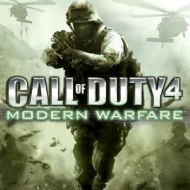

Reviews

Call of Duty: Modern Warfare Remastered Review
Once held up as the great example for contemporary-era shooters, Call of Duty 4: Modern Warfare is now an enlightening time capsule for an style of Call of Duty that no longer exists. When IGN first reviewed it back in 2007, we gave it a 9.4 and said this about it:
8.5/10

Owlboy Review
Owlboy is a game about weakness, but for its lovable cast of characters, individual weaknesses only strengthen their bond as a team of misfits seeking to save the world.
9.3/10

Hitman Episode 6: Hokkaido Review
Io Interactive’s episodic Hitman experiment is over. The end result has been slightly uneven, but Io has managed to wrap up proceedings on a very positive note. Hitman Episode 6: Hokkaido has 47 flexing every one of his murderous muscles, and it’s easily the best ep since April’s terrific Sapienza mission.